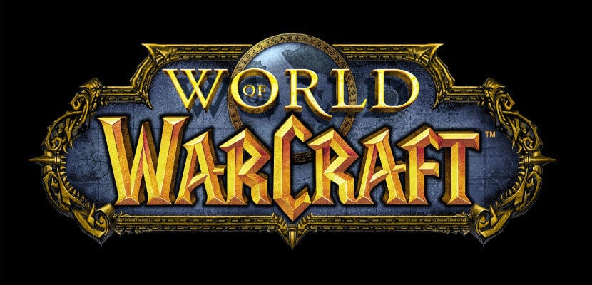

Que es World of Warcraft?
World of Warcraft es un videojuego de rol multijugador masivo en línea desarrollado por Blizzard Entertainment. Es el cuarto juego lanzado establecido en el universo fantástico de Warcraft, el cual fue introducido por primera vez por Warcraft: Orcs & Humans en 1994. World of Warcraft transcurre dentro del mundo de Azeroth, cuatro años después de los sucesos finales de la anterior entrega de Warcraft, Warcraft III: The Frozen Throne. Blizzard Entertainment anunció World of Warcraft el 2 de septiembre de 2001. El juego fue lanzado el 23 de noviembre de 2004, celebrando el décimo aniversario de la franquicia Warcraft.

Actualidad
En la actualidad la ip de Blizzard cursa su 9na expansion, llamada Dragon Flight: Cuando ocurrió El Gran Cataclismo, los vuelos de dragón partieron a defender Azeroth de la invasión demoniaca de la Legión Ardiente, las Islas Dragon se ocultaron gracias al poder de las instalaciones titánicas para así poder aislarse del peligro, asimismo, todos los seres mágicos de estas islas quedaron congelados. 10.000 años después de lo ocurrido, un guardián titánico decide usar las instalaciones para que las Islas Dragon vuelvan a poder ser vistas por el mundo, lo que a la vez descongeló todas las criaturas de estas islas. Ante tal revelación, los vuelos de dragón vuelven a su hogar ancestral, sin embargo, se volverán a enfrentar las amenazas que siempre estuvieron presentes en estas islas, como los primalistas, los enemigos ancestrales de los dragones aspecto que habían sido encerrados, pero su líder, Raszageth, la Devoratormentas, fue liberada y no se detendrá hasta liberar a sus hermanos y eliminar la mácula de los titanes de Azeroth. Además, el vuelo negro tendrá que elegir un nuevo líder. El vuelo verde encontrar el camino a seguir. El vuelo bronce enfrentarse a su contraparte, el vuelo infinito. Dentro del vuelo azul, Kalecgos volverse un líder de fiar y recuperar la confianza de su vuelo. Finalmente, el vuelo rojo establecerse y defender los Estanques de Vida Rubí y Salones de Infusión, asimismo, Alexstrasza, la Reina de los dragones, debe encontrar la forma de fortalecer a los dragones aspecto para enfrentarse a las futuras amenazas como cuando fueron los guardianes de Azeroth.